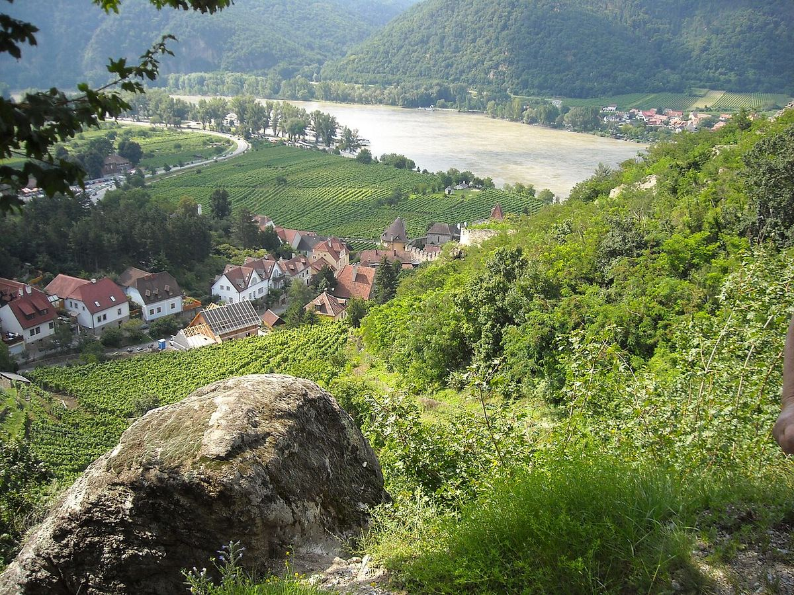

Austria
Austria concentra sus viñedos en el este del país, entre el Danubio y la llanura panónica. Es conocida sobre todo por el Grüner Veltliner y el Riesling secos del Danubio, por tintos de Blaufränkisch y Zweigelt y por los vinos dulces de podredumbre noble del Burgenland.

Historia
La vid se cultivaba en el actual territorio austriaco antes de la llegada de los romanos, que impulsaron su desarrollo en las provincias del Danubio. En la Edad Media los grandes monasterios, como Klosterneuburg, Melk o Göttweig, poseyeron y cuidaron extensos viñedos, y muchas de las terrazas del Danubio se construyeron entonces. En 1784 un decreto del emperador José II permitió a los viticultores vender su propio vino en sus casas, origen de los Heurigen, las tabernas de viticultor que siguen siendo una tradición viva, sobre todo en Viena.
Durante buena parte del siglo XX Austria produjo sobre todo vinos ligeros para el consumo local y vino a granel para la exportación. En 1985 estalló un escándalo: algunos comerciantes habían adulterado vinos con dietilenglicol para hacerlos parecer más ricos. Las exportaciones se hundieron, pero la crisis provocó una de las legislaciones vinícolas más estrictas de Europa y un cambio de orientación hacia la calidad. Desde entonces una generación de viticultores ha dado a conocer internacionalmente los blancos secos del Danubio y los tintos del Burgenland.
Clima y suelos
Casi todo el viñedo se encuentra en el este del país, en los estados de Baja Austria, Burgenland, Estiria y Viena. El clima combina influencias continentales y la llanura panónica cálida del este, con un contraste marcado entre días cálidos y noches frescas en los valles del Danubio, donde los vientos fríos del bosque del Waldviertel refrescan las viñas en la época de maduración. En el Burgenland, el lago de Neusiedl crea la humedad otoñal que favorece la podredumbre noble. Los suelos van del gneis y el granito de las terrazas del Danubio al loess de Kremstal, Kamptal y Weinviertel, y a la pizarra, la caliza y los suelos arcillosos del Burgenland.
Regiones
Baja Austria (Niederösterreich) es la mayor región vitícola y agrupa zonas como Wachau, Kremstal, Kamptal, Traisental, Wagram, Weinviertel, Carnuntum y Thermenregion. El Burgenland, junto a la frontera húngara, es la tierra de los tintos y de los vinos dulces. Estiria (Steiermark), al sur, tiene viñedos en pendientes muy pronunciadas y es conocida por sus blancos aromáticos y por el Schilcher, un rosado de la variedad Blauer Wildbacher. Viena es una de las pocas capitales del mundo con viñedos de importancia dentro de sus límites urbanos.
Variedades y estilos
El Grüner Veltliner es la variedad más plantada del país y su seña de identidad: da desde blancos ligeros y frescos, con su característica nota de pimienta, hasta vinos de gran cuerpo y guarda. El Riesling, mucho menos extendido, alcanza un nivel muy alto en Wachau, Kremstal y Kamptal. Otras blancas son el Welschriesling, el Weissburgunder, el Sauvignon Blanc, muy apreciado en Estiria, y el Gemischter Satz de Viena, una mezcla de variedades plantadas juntas. Entre las tintas destacan el Zweigelt, la más plantada, el Blaufränkisch, de gran potencial en el Burgenland, y el St. Laurent. Los vinos dulces de podredumbre noble del lago de Neusiedl y el Ruster Ausbruch tienen una larga tradición.
Normativa y clasificaciones
La ley austriaca utiliza categorías de madurez emparentadas con las alemanas: Qualitätswein (que incluye el Kabinett) y Prädikatswein, con Spätlese, Auslese, Beerenauslese, Ausbruch, Trockenbeerenauslese, Eiswein y Strohwein. Desde comienzos de los años 2000 se ha desarrollado el sistema DAC (Districtus Austriae Controllatus), que asocia cada zona a sus variedades y estilos típicos; el Weinviertel fue la primera DAC. Muchas DAC distinguen entre vinos regionales, de municipio y de viñedo (Ried). En la Wachau, la asociación Vinea Wachau emplea además sus propias categorías, Steinfeder, Federspiel y Smaragd, según el grado alcohólico y la madurez.
Regiones y denominaciones
Wachau
DAC (Districtus Austriae Controllatus) · La Wachau es un estrecho tramo del valle del Danubio entre Melk y Krems, con viñedos en terrazas de piedra seca sobre roca primaria. Es la región más célebre de Austria por sus Grüner Veltliner y Riesling secos.
Kamptal
DAC (Districtus Austriae Controllatus) · El Kamptal sigue el valle del río Kamp, afluente del Danubio, en torno a la localidad de Langenlois. Sus Grüner Veltliner de loess y sus Riesling del viñedo Heiligenstein se cuentan entre los blancos más apreciados de Austria.
Kremstal
DAC (Districtus Austriae Controllatus) · El Kremstal rodea la histórica ciudad de Krems, a la salida de la Wachau, y combina terrazas de roca primaria al oeste con amplias terrazas de loess al este. Produce Grüner Veltliner y Riesling secos de gran nivel.
Burgenland
Región vitícola (Weinbaugebiet), con varias DAC · El Burgenland, el estado más oriental de Austria, linda con Hungría y está marcado por el clima panónico y por el lago de Neusiedl. Es la gran región austriaca de los vinos tintos, sobre todo de Blaufränkisch y Zweigelt, y de los vinos dulces de podredumbre noble.
Weinviertel
DAC (Districtus Austriae Controllatus) · El Weinviertel («cuarto del vino») es la mayor región vitícola de Austria y se extiende al norte de Viena hasta las fronteras checa y eslovaca. Fue la primera DAC del país y es conocido por sus Grüner Veltliner frescos y especiados.